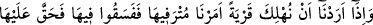
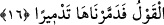
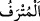

amellere ulaşırsa “kendisi için hidâyet bulmuş olur,” yâni nefsini kurtarmış ve saâdet
nişanıyla süslenmiştir. “Kim de” fâsid, bozuk amellerle doğru yoldan “saparsa kendi
aleyhine sapmış olur.” Kendisini şakâvet damgasıyla damgalamış olur. “Hiçbir
günahkar, başkasının günah yükünü taşımaz.” Hiçbir damga vuran kimse günahlarının
kalemiyle başkasının nefsini damgalamaz.
“Biz” mâzereti ortadan kaldırmak ve delil ile muhâtabı susturmak üzere insanları
hakka ileten, sapıklıktan men eden, delilleri ortaya koyan, şer‘î hükümleri yerleştiren
“peygamber göndermedikçe azâb edecek değiliz.” Yâni sadece aklın hükmüyle
yetinerek dalâlet ve günah sahiplerine azâb etmemiz bizim hakkımızda sahih ve doğru
değildir, hatta sonsuz hikmetimize dayanan âdetimize göre muhal; imkânsızdır.
Bu âyette peygamberlerin gönderilmesinin vâcib olduğuna delâlet vardır. Ancak bu
Allah için bir zorunluluk olması anlamında değildir. Aksine Allah’ın hikmetinin bunu
gerektirmesi bakımından vâcibdir. Çünkü peygamberlerin gönderilmesinde bir takım
faydalar ve hikmetler vardır. Âyette olmayacağı söylenen azabdan maksad dünyevî
azabdır. Dünyevî azâb ise uhrevî azâbın öncülerindendir. Onun için âlimler küfür ve
inadlaşma sebebiyle dünya ve âhirette ve her ikisi arasındaki berzah âleminde azâbı
câiz gördüler.
Peygamber göndermek, mutlak olarak azâbın olmaması için değil, azâbın mukadder
olduğu vakitte gerçekleşmemesi amacıyladır. Nasıl böyle olmasın ki! Uhrevî azâbın
peygamber gönderilmesinden hemen sonra olması mümkün değildir. Dünyevî azâb da
aynı şekilde ancak azâbı gerektiren fısk ve isyan gibi şeylerin gerçekleşmesinden sonra
meydana gelir.
16. Bir ülkeyi helâk etmek istediğimizde, o ülkenin zenginlik sebebiyle şımarmış
elebaşılarına (iyilikleri) emrederiz; buna rağmen onlar orada kötülük işlerler.
Böylece o ülke, helâke müstahak olur; biz de orayı darmadağın ederiz.
“Biz bir ülkeyi helâk etmek istediğimizde,” bir ülkeyi ahâlisine azap etmek sûretiyle
helâk etmekle ilgili irâdemizin vakti yaklaştığında “o ülkenin zenginlik sebebiyle
şımarmış elebaşılarına” yâni nimetlere ermişlerine, büyüklerine ve krallarına o ülke
ahâlisine gönderilmiş peygamberin lisanıyla itâat etmelerini “emrederiz.”
“  el-Mütraf” nimetlerin ve rahat hayatın kendisini şımarttığı kimsedir. Bu
kelimenin kökü olan “ et-türfe” ise nimet ve hoş yiyecek demektir. İtâat emri,
kavmin tamamına yönelik olduğu halde Allah Teâlâ’nın özellikle mütref olanları
zikretmesi emrin asıl muhataplarının onlar olması sebebiyledir. Çünkü diğerleri onların
takipçileridir.